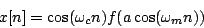
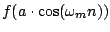
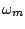
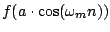
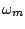
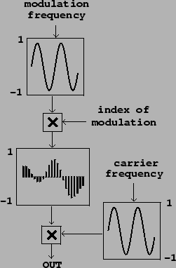
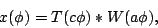
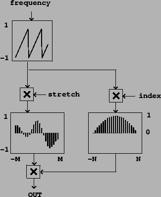
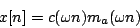
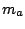

Next: Pulse trains
Up: Designer spectra
Previous: Designer spectra
Contents
Index
Carrier/modulator model
Earlier we saw how to
use ring modulation
to modify the spectrum of a periodic signal, placing spectral peaks in
specified locations (see Figure
5.4, Page ![[*]](file:/usr/local/share/lib/latex2html/icons/crossref.png) ). To do
so we need to be able to generate periodic signals whose spectra have maxima
at DC and fall off monotonically with increasing frequency.
If we can make a signal with a formant at frequency zero--and no other
formants besides that one--we can use ring modulation to displace the formant
to any desired harmonic. If we use waveshaping to generate the initial formant,
the ring modulation product will be of the form
). To do
so we need to be able to generate periodic signals whose spectra have maxima
at DC and fall off monotonically with increasing frequency.
If we can make a signal with a formant at frequency zero--and no other
formants besides that one--we can use ring modulation to displace the formant
to any desired harmonic. If we use waveshaping to generate the initial formant,
the ring modulation product will be of the form

where  (the
carrier frequency) is set to the formant center frequency and
 is a signal with fundamental frequency
determined by
,
produced using a waveshaping function
(the
carrier frequency) is set to the formant center frequency and
 is a signal with fundamental frequency
determined by
,
produced using a waveshaping function  and index
and index  .
This second term is the signal we wish to give a formant at DC with a
controllable bandwidth. A block diagram for synthesizing this signal is
shown in Figure 6.2.
.
This second term is the signal we wish to give a formant at DC with a
controllable bandwidth. A block diagram for synthesizing this signal is
shown in Figure 6.2.
Figure 6.2:
Ring modulated waveshaping for formant generation
|  |
Much earlier in Section 2.4 we introduced the
technique of
timbre stretching,
as part of the discussion of wavetable synthesis. This technique, which is
capable of generating complex, variable timbres, can be fit into the
same framework. The enveloped wavetable output for one cycle is:

where  , the phase, satisfies
, the phase, satisfies
 . Here
. Here
 is a function stored in a wavetable,
is a function stored in a wavetable,  is a windowing function,
and
is a windowing function,
and  and are the wavetable stretching and a modulation index for
the windowing function. Figure 6.3 shows how to realize
this in block
diagram form. Comparing this to Figure 2.7, we see that the
only significant new feature is the addition of the index .
and are the wavetable stretching and a modulation index for
the windowing function. Figure 6.3 shows how to realize
this in block
diagram form. Comparing this to Figure 2.7, we see that the
only significant new feature is the addition of the index .
In this setup, as in the previous one, the first term specifies the placement of
energy in the spectrum--in this case, with the parameter acting to stretch
out the wavetable spectrum. This is the role that was previously carried out
by the choice of ring modulation carrier frequency .
Figure 6.3:
Wavetable synthesis generalized as a variable spectrum generator.
|  |
Both of these (ring modulated waveshaping and stretched wavetable synthesis)
can be considered as particular cases of a more general approach
which is to compute functions of the form,

where is a periodic function describing the carrier signal, and 
is a periodic modulator function which
depends on an index .
The modulation functions we're interested in will
usually take the form of pulse trains, and the index will control the
width of the pulse; higher values of will give narrower pulses.
In the wavetable case, the modulation function must
reach zero at phase wraparound points to suppress any discontinuities in the
carrier function when the phase wraps around. The carrier signal will give
rise to a single spectral peak (a formant) in the ring modulated waveshaping
case; for wavetables, it may have a more complicated spectrum.
In the next section we will further develop the two forms of modulating
signal we've introduced here, and in the following one we'll
look more closely at the carrier signal.
Next: Pulse trains
Up: Designer spectra
Previous: Designer spectra
Contents
Index
Miller Puckette
2006-12-30